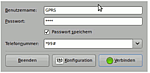
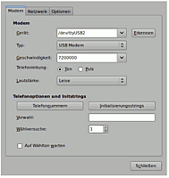
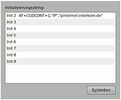
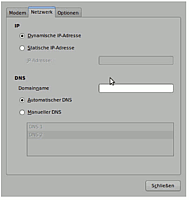
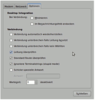
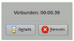
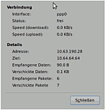

XS Stick W14
Archivierte Anleitung
Dieser Artikel wurde archiviert, da er - oder Teile daraus - nur noch unter einer älteren Ubuntu-Version nutzbar ist. Diese Anleitung wird vom Wiki-Team weder auf Richtigkeit überprüft noch anderweitig gepflegt. Zusätzlich wurde der Artikel für weitere Änderungen gesperrt.
Zum Verständnis dieses Artikels sind folgende Seiten hilfreich:
Einige Mobilfunkanbieter bieten den UMTS-Stick XS Stick W14  von 4G Systems an. Mittels HSUPA erreicht der Stick bei entsprechender Verfügbarkeit in den Mobilfunknetzen Uploadraten von bis zu 5,76 Mbit/s. Die Unterstützung seitens Ubuntu ist prinzipiell sehr gut, allerdings wird er nicht richtig erkannt: beim Einstecken wird der Stick als CD-ROM Laufwerk identifiziert. Um das Problem zu umgehen, beschreibt dieser Artikel, wie man dem Stick automatisiert mit USB ModeSwitch den korrekten Treiber zuweist und eine Verbindung zum Internet herstellt.
von 4G Systems an. Mittels HSUPA erreicht der Stick bei entsprechender Verfügbarkeit in den Mobilfunknetzen Uploadraten von bis zu 5,76 Mbit/s. Die Unterstützung seitens Ubuntu ist prinzipiell sehr gut, allerdings wird er nicht richtig erkannt: beim Einstecken wird der Stick als CD-ROM Laufwerk identifiziert. Um das Problem zu umgehen, beschreibt dieser Artikel, wie man dem Stick automatisiert mit USB ModeSwitch den korrekten Treiber zuweist und eine Verbindung zum Internet herstellt.
Installation¶
Zuerst muss USB ModeSwitch installiert werden.
Hinweis:
Bei Problemen sollte eventuell eine bereits installierte ältere Version von USB_ModeSwitch komplett entfernt werden, siehe diesen Forenbeitrag  (Getestet mit Version 1.1.0)
(Getestet mit Version 1.1.0)
Konfiguration¶
Umschalten auf Modembetrieb¶
Da das Modem standardmäßig im Datenträgermodus startet, in dem es als CD-Laufwerk erkannt wird, kommt das Programm USB ModeSwitch zum Einsatz, das es in den Modembetrieb schaltet.
Automatisch¶
Bei aktuellen Versionen ist bereits eine Automatisierung für diesen Stick vorgesehen, die vor manuellen Eingriffen getestet werden sollte.
Hinweis:
Nach der Installation von USB_ModeSwitch kann es notwendig sein, den Befehl sudo udevadm control --reload-rules auszuführen oder das System neu zu starten, damit die Änderung auch aktiv wird.
Den Stick einstecken, kurz warten, ein Terminal öffnen [3] und nun sollte
lsusb | grep -i 1c9e
folgende Ausgabe bringen:
Bus ... Device ...: ID 1c9e:9603
Das Gerät befindet sich nun im Modem-Modus.
Manuell¶
Bei Problemen kann eine Konfiguration manuell hinterlegt werden, in dem man die Datei /etc/usb_modeswitch.conf mit einem Editor [1] und Root-Rechten [2] editiert. In der Datei sucht man nach den Zeilen bzw. fügt folgende Zeilen ein:
######################################################## # 4GSystems XS Stick W10/W14 # # USB-ID im Datentraegermodus DefaultVendor= 0x1c9e DefaultProduct= 0xf000 # USB-ID im Modemmodus TargetVendor= 0x1c9e TargetProduct= 0x9603 MessageContent="55534243123456788000000080000606f50402527000000000000000000000"
Hinweis:
Der Programmautor stellt unregelmäßig eine aktualisierte usb_modeswitch.conf unter dem Namen device_reference.txt bereit.
Damit ist usb_modeswitch fertig konfiguriert und kann genutzt werden, in dem man nach dem Einstecken des Sticks im Terminal [3] folgenden Befehl ausführt:
sudo usb_modeswitch
Anschließend sollte
lsusb | grep -i 1c9e
folgende Ausgabe bringen:
Bus ... Device ...: ID 1c9e:9603
Laden des Treibers¶
Wenn sich das Modem im Modem-Modus befindet, sollte überprüft werden, ob der Treiber usbserial geladen ist:
lsmod | grep usbserial
Erfolgt hier keine Ausgabe, muss der Treiber noch geladen werden:
sudo modprobe usbserial vendor=0x1c9e product=0x9603
Erfolgt hier eine Ausgabe, in der rechts noch weitere Module (z.B: das Modul
option) angezeigt werdenusbserial 33019 1 option
sollte man dieses Modul gemeinsam mit
usbserialentladen:sudo modprobe -r option
Danach müsste
lsmod | grep usbserialkeine Ausgabe bringen und man kann wie oben beschrieben neu laden.Erfolgt hier eine Ausgabe in der nur noch das Modul
usbserialaufscheintusbserial 33019 0
kann man fortfahren.
Danach sollte der Befehl
ls /dev/ | grep ttyUSB
folgende Ausgabe bringen:
ttyUSB0 ttyUSB1 ttyUSB2
Bei Problemen sollte man den Treiber usbserial entladen:
sudo modprobe -r usbserial
Danach müsste lsmod | grep usbserial keine Ausgabe bringen und man kann wie oben beschrieben neu laden.
Sollte es nicht klappen evtl. bei Benutzung der SIM in einem anderen Gerät: Rücksetzen des Sticks im Modem-Modus:
sudo usb_modeswitch -v 1c9e -p 9603 -R
Und den Treiber usbserial wie oben beschrieben neu laden.
Automatisierung¶
Falls manuelle Eingaben zum Umschalten des Modems bzw. Laden des Treibers erforderlich waren, definiert man eine udev-Regel, die diese Arbeit übernimmt. Hierzu editiert [1] man mit Root-Rechten [2] die vorgefertigte Regel /lib/udev/rules.d/40-usb_modeswitch.rules bzw. /lib/udev/rules.d/80-usb_modeswitch.rules und sucht nach folgender Zeile:
ATTRS{idVendor}=="1c9e", ATTRS{idProduct}=="f000", RUN+="usb_modeswitch '%b/%k'"Dieser Zeile ändert man auf:
ATTRS{idVendor}=="1c9e", ATTRS{idProduct}=="f000", \Dahinter fügt man nun je nach Bedarf folgende Zeilen ein:
Zum Protokollieren (zum Testen sehr empfehlenswert)
RUN+="/usr/bin/logger Beginn W14 Verarbeitung.", \
Zum Umschalten in den Modemmodus, falls das Umschalten mit dem Originalbefehl funktioniert hat:
RUN+="usb_modeswitch '%b/%k'", \
Zum Umschalten in den Modemmodus, falls nicht:
RUN+="/bin/sleep 5", \ RUN+="/usr/sbin/usb_modeswitch", \ RUN+="/bin/sleep 5", \
Zum Laden des Treibers:
RUN+="/sbin/modprobe -r option", \ RUN+="/bin/sleep 1", \ RUN+="/sbin/modprobe usbserial vendor=0x1c9e product=0x9603", \
Falls man wvdial eingerichtet hat (siehe unten) und die Verbindung beim Einstecken des Sticks immer automatisch herstellen möchte:
RUN+="/bin/sleep 10", \ RUN+="/usr/bin/wvdial umts", \
Zum Protokollieren:
RUN+="/usr/bin/logger Ende W14 Verarbeitung."
Danach lädt man die udev-Regeln neu:
sudo udevadm control --reload-rules
Nun steckt man den Stick an und sieht danach ins Protokoll:
less /var/log/messages
Durch Drücken von Ende positioniert man sich ans Ende des Protokolls, mit Q verlässt man es.
Eine weitere Möglichkeit zur Automatisierung ist den Treiber bereits beim Hochfahren zu laden. Dazu muss man die Datei /etc/modules mit Root-Rechten editieren und folgende Zeile anhängen:
usbserial vendor=0x1c9e product=0x9603
NetworkManager¶
Nach dem Einstecken des Sticks dauert es ca. 1 Minute (!), bis der NetworkManager den Stick gefunden hat, aber bisher lief er nicht korrekt bzw. es konnte trotz Zuweisung der korrekten Parameter bzw. Pin-Nummer keine Verbindung aufgebaut werden. Daher ist es von Vorteil, das Programm wvdial zu nutzen.
Hinweis für Maverick: Stick wird problemlos erkannt und es kann eine Verbindung über den NetworkManager aufgebaut werden (Test mit deaktivierter Pin der SIM Karte).
Hinweis:
Unter Maverick ist vor dem Herunterfahren des Computers die Verbindung zu trennen, da sonst beim nächsten Start eventuell keine neue Verbindung aufgebaut werden kann.
wvdial¶
Mit wvdial kann eine Verbindung hergestellt werden. Zunächst muss das Paket wvdial installiert werden. Dann sind drei Schritte nötig, um eine Verbindung herzustellen. Es empfiehlt sich, die Pin-Nummer zu deaktivieren, was im Segment [Dialer nopin] in wvdial.conf weiter unten beschrieben wird:
/etc/wvdial.conf mit Wahlparametern erstellen
Aufruf von
wvdial nopin, um die Pin-Nummer zu deaktivierenwvdial umts, um eine Verbindung herzustellen
wvdial.conf¶
Man legt /etc/wvdial.conf mit einem Editor [1] und Root-Rechten [2] an und kopiert folgende Zeilen hinein:
[Dialer Defaults] Phone = *99# Username = "GPRS" Password = "GPRS" Stupid Mode = on Dial Command = ATDT Modem Type = USB Modem Modem = /dev/ttyUSB2 Init1 = ATZ [Dialer nopin] Init2= AT+CPIN="????" Init3= AT+CLCK="SC",0,"????" [Dialer umts] Carrier Check = on # Abfrage der hinterlegten APNs. Der erste Eintrag wird zur Einwahl verwendet. Init2= AT+CGDCONT? # Beispiele zum Setzen eigener APNs, zur Aktivierung Strichpunkt entfernen! ;Init3= AT+CGDCONT=1,"IP","APN" ;Init3= AT+CGDCONT=1,"IP","internet.interkom.de" ;Init3= AT+CGDCONT=1,"IP","internet.t-mobile" ISDN = off
Wichtig ist hierbei, dass nicht etwa /dev/ttyUSB1 benutzt wird, sondern tatsächlich /dev/ttyUSB2!
Im Segment [Dialer nopin] ist statt ???? die aktuelle Pin-Nummer einzugeben. Der Benutzername bzw. das Passwort ist beliebig, muss aber vorhanden sein. APN wird der im Stick hinterlegte verwendet (s. Kommentarzeilen). Der Benutzer muss zum Herstellen der Verbindung Root-Rechte haben (es ist auch möglich, die Modem-Rechte einem Benutzer zuzuweisen, darauf wird hier aber nicht eingegangen).
Verbindung herstellen¶
Zum Deaktivieren der PIN-Nummer gibt man im Terminal folgende Zeilen ein:
sudo wvdial nopin
Man wartet auf das Beenden des Programms, der Stick blinkt dabei entsprechend den Leuchtcodes. Falls es zu Fehlermeldungen kommt, können sie meist ignoriert werden, weil die Befehle anscheinend zu oft ausgeführt werden – wo das Problem liegt, ist nicht bekannt. Wichtig ist, dass beim ersten Aufruf die Pin-Nummer akzeptiert wird und diese dann mit "…CLCK…" deaktiviert wird, damit in Zukunft keine Pin mehr überprüft werden muss. Dieses Kommando wird nur ein Mal ausgeführt, nach Hochfahren des Rechners muss dies dann nicht wiederholt werden. Danach gibt man ein:
sudo wvdial umts
und wartet, bis der Stick zu blinken aufhört und konstant leuchtet – im Terminal erkennt man einen "connect" und die Bitrate etc. Nun kann eine Verbindung zum Internet hergestellt werden.
Zum Beenden der Verbindung wechselt man ins Terminal und gibt Strg + C ein, damit wird die Verbindung unterbrochen. Zur Wiederaufnahme gibt man ein:
sudo wvdial umts
Gnome-PPP¶
Gnome-PPP eignet sich ebenfalls zum Herstellen einer Internetverbindung ohne Terminal, da es auf wvdial aufsetzt und eine wvdial.conf-Datei selbst verwaltet. Bitte beachten, dass die Benutzung von Modems für den jeweiligen Benutzer frei geschaltet sein muss. ("Systemverwaltung -> Beutzer und Gruppen"). In Gnome-PPP sind folgende Werte einzutragen:

Benutzer und Passwort: GPRS für beide Angaben.
Die anderen Screens sind selbsterklärend, hier die Eingaben übernehmen:
|  |
|  |
|  |
|  |
Verbindung herstellen¶
Man wechselt zur ersten Maske und drückt "Verbinden". Nach 1-5 Sekunden erscheint dann folgendes Fenster:

Jetzt ist eine Verbindung ins Internet möglich. Falls man den Datendurchsatz etc. kontrollieren will, wählt man "Details", es erscheint folgende Maske:

Anzumerken wären noch eine Kurzerfahrungen mit einem falschen APN (Initstring 2): Wenn hier ein falscher APN-Name eingegeben wird, ist zwar eine Verbindung möglich, aber diese bietet nur "Schneckentempo" (ca. 1-5 Kbit/s).
Leuchtcodes¶
| Leuchtcodes | |
| Intensität | Bedeutung |
| blinkend | Bereitschaft |
| konstant | Verbindung |
| Farbe | Bedeutung |
| bunt | Netzsuche |
| rot | SIM-Problem |
| grün | HSPA |
| blau | UMTS |
| violett | EDGE |
| gelb | GPRS |
Links¶
Originalanleitung aus dem Forum - die Basis für diesen Artikel
XS Surfstick W14 unter Ubuntu 10.04 - die Basis für Ergänzungen zu Ubuntu 10.04
sakis3g
- vollautomatische Erkennung und Einbindung auch für den XS Stick W14
- Erstellt mit Inyoka
-
 2004 – 2017 ubuntuusers.de • Einige Rechte vorbehalten
2004 – 2017 ubuntuusers.de • Einige Rechte vorbehalten
Lizenz • Kontakt • Datenschutz • Impressum • Serverstatus -
Serverhousing gespendet von